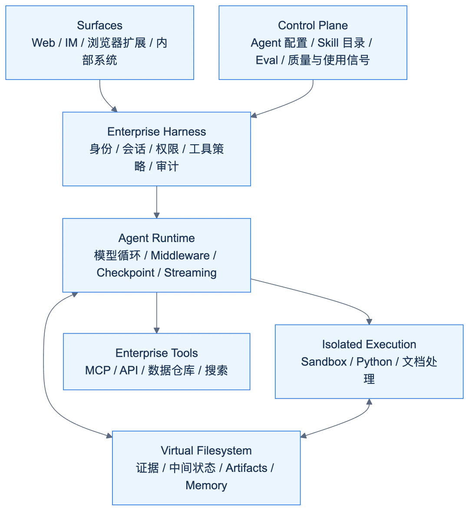
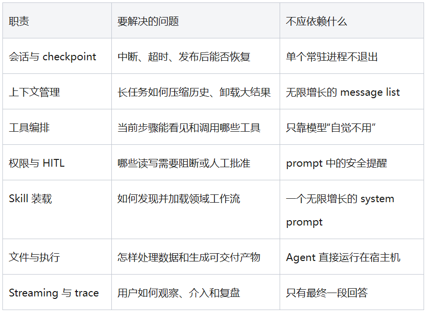
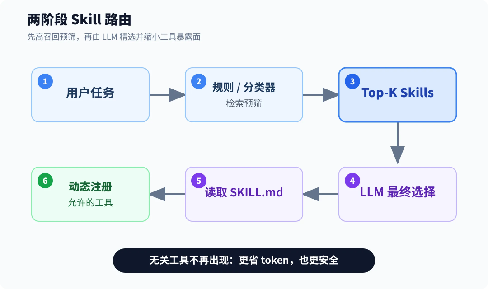
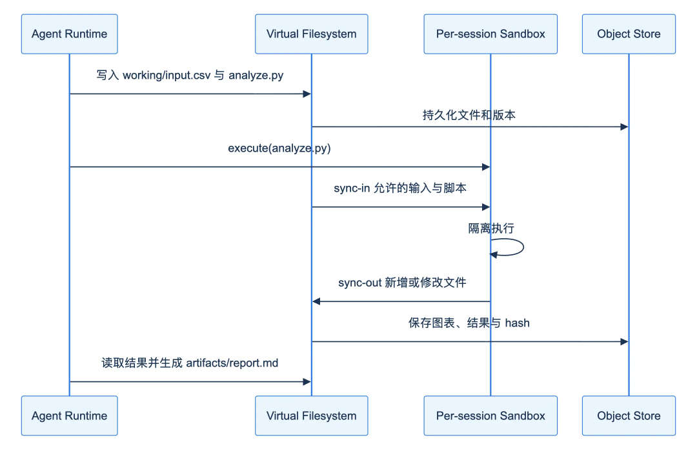
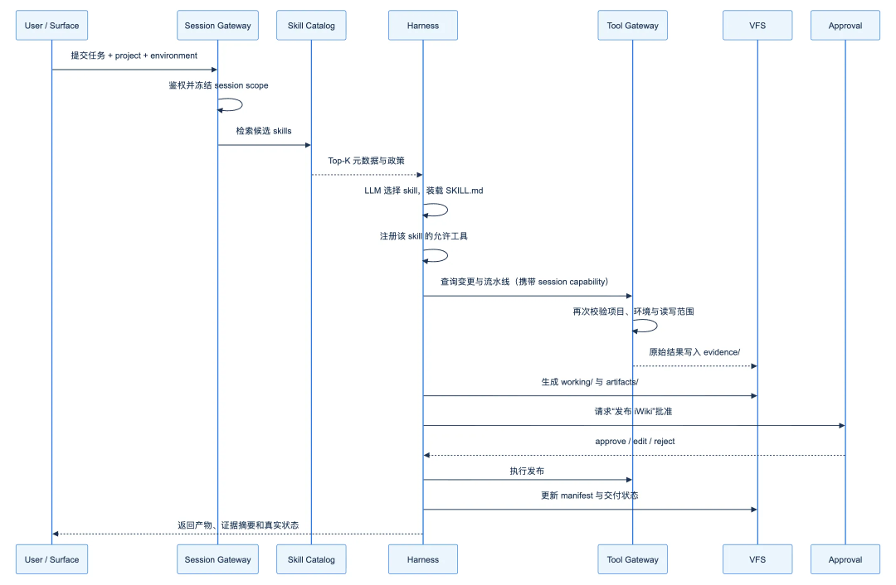
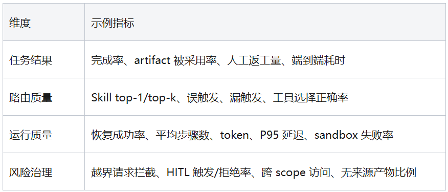

这是一篇关于企业 Agent 落地的笔记：结合行业案例和自己的实践。我知道在 AI 时代写长文是逆潮流的——注意力越来越短。写完后我反复权衡过要不要让 AI 删减，最终没舍得删任何一段。希望对你有启发。
企业 Agent 从演示走向生产，最难的问题通常不再是模型能不能调用工具，而是三个更基础的问题：一次任务可以访问什么，分散在各团队的业务经验如何进入 Agent，以及跨越几十甚至几百步的工作状态应该保存在哪里。
如果这三个问题没有统一答案，接入再多模型和 MCP 工具，也只会得到一个能力强但不可治理的聊天机器人。本文讨论一种更接近生产系统的架构：以统一 harness 承载执行和安全，以 skill 分发领域能力，以虚拟文件系统管理长任务的上下文、证据和最终产物。
01
一个 Agent 原型通常只有四个部件：模型、system prompt、若干工具，以及一个不断把工具结果交还给模型的循环。它足以演示“查数据后生成报告”，却没有回答生产系统必须回答的问题：进程中断后能不能恢复；长任务怎样避免撑爆上下文；两个有权限的数据域能否在同一会话中混用；模型生成的代码在哪里运行；领域提示词由谁维护；一次失败究竟是模型、工具、skill 还是数据造成的。
这些问题共同指向 Agent harness。本文所说的 harness，不是某个模型 SDK 的薄封装，而是包围模型的完整运行时：它编排模型与工具调用，管理会话状态和检查点，控制工具暴露与人工审批，装载 skills，提供文件和代码执行环境，并输出可用于调试和评测的 trace。
这一区分很重要。模型决定一次推理的上限，harness 决定这份能力能否稳定、可控地进入企业流程。更换模型可能提高回答质量，却不会自动产生权限隔离、失败恢复、资产治理和交付证据。
两种常见但不可持续的落地方式
第一种是“一个场景一个 Agent”。销售准备、财务分析、故障巡检各自复制一份 prompt，再连接各自的工具。它的初期交付速度很快，但重复的基础逻辑会逐渐分叉：每个 Agent 有不同的重试、权限、审计和输出约定，领域团队也很难判断应该修改 prompt、工具还是模型。
第二种是“直接把 coding agent 发给所有人”。Coding agent 的文件、终端和代码执行能力很强，但它默认面对的是工程工作区。知识工作者需要的却是业务对象、受控数据和可分享的报告，而不是任意 shell。把强执行能力原样暴露出去，会把安全风险和支持成本一起转嫁给用户。
Stripe 在建设 Knowledge AI Platform（Kai）之前也经历过类似阶段：其 NoCode Agent Builder 曾产生超过 4,000 个工作流 Agent，随后出现相似提示词重复、质量不一以及难以统一维护的问题。Kai 最终选择共享运行平台、由领域团队贡献 skills 的方向，而不是继续扩张微型 Agent 数量。Stripe 的官方复盘(https://stripe.dev/blog/meet-stripes-knowledge-ai-platform)说明，这不是单纯的检索优化，而是产品和运行时边界的重构。
02
一个可扩展的企业 Agent 平台可以拆成四层：

最上层是用户已经工作的入口。Web 聊天只是其中一种，Agent 还可能嵌入企业 IM、数据平台、工单系统或浏览器扩展。入口应调用同一套 surface-agnostic API，而不是各自复制 Agent 逻辑。
控制面管理的是变化较快、需要领域所有权的资产：skill、Agent 配置、默认工具集、评测集、版本和质量信号。企业 harness 则承接统一身份、会话范围、权限、审计和基础设施适配。最底层的通用 runtime 负责模型调用、middleware、流式事件、checkpoint 和恢复。
这种分层的原则是：通用 Agent 问题只解决一次，企业特有问题留在企业层，领域知识交给最了解它的人维护。 Stripe 在 Kai 中使用 Deep Agents/LangGraph 处理通用运行时，再叠加 Stripe 自身的安全和内部服务；Deep Agents 官方也将自己定位为带文件系统、summarization、subagent、持久化和 HITL 的 opinionated harness，而不是业务应用本身。Deep Agents 项目说明(https://github.com/langchain-ai/deepagents)
Harness 应该拥有的最小职责
一个生产级 harness 至少需要提供以下能力：

这些职责属于稳定内核。业务团队不应该为了增加一个“发布周报”skill，就重新实现 checkpoint 或 sandbox；平台团队也不应该为了修改财务分析口径，成为领域 prompt 的审批瓶颈。
03
工具解决“能做什么”，skill 解决“在什么场景下，应该按什么流程、使用哪些工具、以什么标准完成”。一个查询流水线日志的 API 是工具；“先定位失败阶段，再下载相关日志，区分代码失败与基础设施失败，最后用固定证据格式回填工单”才是 skill。
这个差异使 skill 成为企业能力分发的合适边界。它既不像 system prompt 那样全局而不可拆分，也不像工具描述那样只能说明输入输出。一个完整 skill 可以包含：
用于发现和路由的元数据；
模型执行的步骤、判断标准与失败分支；
对工具、数据和运行环境的依赖声明；
可复用的脚本、参考资料和产物模板；
正例、近邻负例和结果评测；
owner、版本、风险等级和变更记录。
3.1 Progressive disclosure 只解决一半问题
Deep Agents 采用三层渐进加载：启动时只把每个 skill 的 name 与 description 放进上下文；模型判断相关后再读取完整 SKILL.md；scripts、references 和 assets 最后按需加载。官方 Skills 文档(https://docs.langchain.com/oss/python/deepagents/skills)将其称为 progressive disclosure。
Level 1: name + description 所有候选技能，负责发现Level 2: SKILL.md 命中后读取，负责执行策略Level 3: scripts/references/... 用到时读取，负责确定性能力与详细知识
它避免了把所有领域说明一次性塞入 system prompt，但没有消除目录选择问题。几十个描述相近的 skill 同时出现时，模型仍可能误选或犹豫。LangChain 对 Kai 的案例披露，当系统 prompt 叠加到约 150 个技能时，frontier model 的选择质量已出现下降；Kai 因而开始从纯 LLM 选择转向“检索或分类器预筛，再由 LLM 最终判断”。Kai 技术案例(https://www.langchain.com/blog/how-stripe-built-their-knowledge-ai-platform-on-deep-agents)
因此，大规模 skill 目录需要两个阶段：

第一阶段追求召回率，把几百项缩小为十几项；第二阶段利用 LLM 对当前会话的理解做精确选择。真正执行时，harness 才注册被选 skill 允许的工具。这样做同时降低上下文成本和攻击面：无关工具不只是“不建议调用”，而是根本不出现在当前模型请求里。
3.2 联邦所有权，而不是中心团队代写所有 Skill
企业知识通常分散在财务、法务、销售、研发和运维团队。平台团队可以定义 skill 规范和运行时，却不可能长期维护每个领域的判断标准。合理模式是联邦治理：
平台团队维护 schema、lint、发布、权限编译、评测和观测能力；
领域团队拥有 skill 内容、参考资料和业务验收标准；
安全团队维护强制政策和风险模板；
用户或项目可以在受控范围内叠加本地 skill；
同名覆盖遵守明确的 base → team → project → user 优先级。
Kai 采用了类似分层：基础技能固定存在，职能默认技能按用户画像装载，个人再增加自己的技能。这里真正可复制的不是 Stripe 的组织结构，而是“平台不垄断知识，领域团队也不能绕开平台约束”。
3.3 Skill Control Plane 的最小数据模型
只把 SKILL.md 放进 Git 还不够。平台需要从它生成机器可读 registry，并把风险和质量变成一等字段：
name: release-rollback-weekly-reportversion: 1.4.0owner: devops-governancedomain: engineering.change-managementinvocation: modelrisk: writeallowed_tools:- query_pipeline- read_change_order- publish_iwiki_with_approvaldata_scopes:- project:${session.project_id}surfaces:- web- codexeval_suite: evals/routing-and-output.jsonstatus: promoted
这些字段不能只用于展示。registry 应进一步编译出运行时工具白名单、HITL 规则、可用入口和评测任务。CI 则检查命名、目录一致性、重复描述、失效引用、无 owner 的 promoted skill，以及“具有写风险但没有审批策略”等结构性问题。
3.4 首先评测“有没有选对”，再评测“做得好不好”
Skill 评测至少分为两层。第一层是 catalog routing：该触发时是否触发、相邻 skill 是否混淆、组合任务是否能选出多个 skill、没有匹配项时是否拒绝硬套。第二层才是执行结果：工具是否正确、证据是否充分、产物是否符合结构、是否发生越权或不必要写入。
只优化单个 skill 的正例是不够的。最有价值的测试往往是近邻负例，例如“查询构建日志”和“下载构建制品”、“创建工蜂 Issue”和“修复已有 MR”。目录规模越大，越应该报告 top-1 accuracy、top-k recall、误触发率、漏触发率、token 成本和具体混淆对，而不是只看最终回答是否看起来合理。
04
为什么 Agent 需要文件系统？因为知识工作并不是一连串可以丢弃的聊天消息。一次完整任务通常同时包含原始证据、下载的文档、查询结果、中间脚本、清洗后的数据、图表、报告草稿和最终版本。把这些对象全部编码进 message history，会造成三个问题：上下文越来越昂贵；模型难以定位最新版本；用户无法在对话之外接管产物。
虚拟文件系统（Virtual Filesystem，VFS）提供了一套模型已经非常熟悉的操作语义：ls、read、write、edit、grep。它不要求底层真的使用 POSIX 磁盘；路径可以路由到内存状态、对象存储、数据库、远端 workspace 或只读知识库。关键是给 Agent 一个稳定、可寻址、能跨轮次存在的工作空间。
4.1 会话文件系统的建议布局
/sessions/<session-id>/scope.json # 本会话绑定的项目、租户、环境和权限快照evidence/ # 工具拉取的原始只读证据working/ # 中间数据、脚本、计划与草稿artifacts/ # 用户可消费的报告、图表、文档checkpoints/ # 可恢复的执行状态或其索引manifest.json # 产物来源、hash、owner、审批与交付状态/skills/ # 版本化 skill，可配置只读或受控写入/memories/ # 跨会话的稳定偏好和项目约定/shared/ # 显式发布后才能进入的团队共享资产
目录的价值不只是整洁，而是建立信息生命周期。evidence/ 默认不可被 Agent 覆盖，避免模型“修正”原始证据；working/ 可以频繁变化；artifacts/ 是对用户承诺的输出；只有经过显式发布，内容才从 session 私有空间进入 /shared/。这样，临时推理状态不会无意中变成组织事实。
4.2 VFS 与 Sandbox 必须是两个边界
文件持久化和代码执行不应该绑在同一个宿主环境里。推荐的模型是：Agent runtime 运行在受控服务中，通过 VFS 管理状态；当任务需要 Python 分析、图表生成或 PDF/PPT 处理时，再把 sandbox 作为工具调用。

Kai 使用的正是类似思路：以 S3 支撑多租户虚拟文件系统，执行前把相关文件 materialize 到 sandbox，结束后同步变化；Agent 本身在 sandbox 外运行。这样既保持跨轮次文件世界的一致性，又把模型生成代码的风险限制在独立执行环境中。LangChain 对 Kai 的实现说明(https://www.langchain.com/blog/how-stripe-built-their-knowledge-ai-platform-on-deep-agents)
Sandbox 保护的是宿主环境，不代表 sandbox 内的数据天然安全。输入文件、网络、凭证、运行时长、CPU/内存、输出大小以及 sync-out 路径都必须单独约束。
4.3 文件系统如何缓解上下文膨胀
VFS 不是把上下文窗口无限扩大的魔法，而是把“当前推理必须看到的内容”和“任务需要保留但不必每轮发送的内容”分开。工具返回大型日志时，harness 可以把完整结果写入 evidence/build-123.log，只向模型返回路径、摘要、行数和 hash。后续如果需要定位错误，再用 grep 和分段读取取回相关部分。
长会话还需要 summarization 与 checkpoint 配合。Summarization 压缩的是已经发生的对话，文件系统保留的是可再次验证的事实和产物，checkpoint 保存的是执行状态。三者不能互相替代：只有摘要会丢失细节，只有文件会丢失决策过程，只有 checkpoint 则会让每次模型调用继续背负全部上下文。
4.4 Artifact 必须带有来源和交付状态
Agent 生成一个 report.md 不等于完成交付。企业任务经常需要区分：来源是否为实时系统、数据窗口是什么、本地验证是否通过、是否已推送、是否已部署、是否经过业务验收。建议让 manifest.json 成为 artifact contract：
{"artifact": "artifacts/rollback-weekly-report.md","generated_at": "2026-08-06T10:30:00+08:00","session_scope": {"project": "appset","environment": "production-readonly"},"sources": [{"path": "evidence/change-orders.json", "sha256": "..."}],"validation": {"local": "passed","remote_pipeline": "not_run","deployed": false,"accepted": false},"approvals": []}
这让 UI、后续 Agent 和审计系统能够读取结构化事实，而不是从自然语言中的“已经完成”猜测真实状态。
05
传统企业应用通常以用户身份做授权：用户能否读取某个项目、修改某条配置。Agent 增加了一个新的委托层——用户授权 Agent 完成某项任务。用户拥有的全部权限，不应该自动成为这次任务的全部权限。
更合理的有效能力模型是：
effective capability= user authorization∩ agent configuration∩ selected skill policy∩ session/task scope∩ tool-side enforcement
例如，用户分别有权访问客户 A 和客户 B，不代表一次针对客户 A 的分析可以读取 B。会话创建时应绑定 customer_id=A，工具服务端检查请求目标是否仍在 scope 内。模型不能通过换一种参数写法扩大范围，sandbox 中的脚本也不能绕过相同约束。
Prompt 不是安全边界
“不要访问其他客户”“写操作前请询问用户”可以帮助模型做出正确选择，但不能作为最终控制。Deep Agents 的 README 也明确采用 “trust the LLM” 模型：Agent 可以做工具允许的任何事，必须在工具或 sandbox 层设置边界。Deep Agents 安全说明(https://github.com/langchain-ai/deepagents#security)
实际落地时至少需要四道门：
工具可见性：只向模型注册当前 skill 需要的工具；
参数策略：在 tool gateway 校验租户、项目、环境、对象和操作类型；
执行隔离：shell、脚本和文档解析进入限制网络与资源的 per-session sandbox；
人工审批：发布、删除、生产变更和跨范围读取在执行前 interrupt。
框架自带的 filesystem permission 也要理解其边界。Deep Agents 官方文档指出，其声明式 permissions 约束的是内建文件工具，并不会自动覆盖自定义工具和 MCP；具有任意命令执行能力的 sandbox 同样需要独立策略。Permissions 文档(https://docs.langchain.com/oss/python/deepagents/permissions) 因此，allowed-tools、MCP server 权限、sandbox policy 和业务 API 授权必须组合使用。
06
把上述部件放在一起，一次“分析某项目最近一周的回滚并发布周报”的请求，不应该直接变成一轮带全部工具的模型调用，而应经历一条可观测、可阻断的执行链：

这里有几个刻意的设计：scope 在 session gateway 固化，而不是让模型自己推断；候选 skill 和工具集逐步收窄；工具结果首先成为证据文件，而不是无结构地堆进上下文；写操作在真正调用前审批；最终响应引用 manifest 中的状态，而不是由模型自由描述。
状态要分成三类
实现时可以把状态明确分为：
class SessionContext(TypedDict):# 创建会话后不可由模型修改user_id: strtenant_id: strproject_id: strenvironment: strcapability_id: strclass AgentState(TypedDict):# 可 checkpoint 的执行状态messages: listplan: listselected_skills: list[str]pending_approvals: list[str]class ArtifactState(TypedDict):# 通过 VFS 保存的大对象与交付事实evidence_paths: list[str]artifact_paths: list[str]manifest_path: str
不可变的 session context 不应混在模型可以编辑的文件或消息里；AgentState 适合 checkpoint 和恢复；ArtifactState 只保存路径和索引，大文件由 VFS backend 管理。这样的拆分可以避免一次 summarization 意外改变权限，也避免 checkpoint 数据库反复序列化大型文档。
07
企业通常已经拥有 MCP、内部 API、脚本、知识库和若干 Agent。引入统一 harness 不意味着把这些能力全部重写。更现实的路径是先统一控制协议，再逐步替换执行内核。
阶段一：建立资产与风险基线
先枚举现有 Agent、skills 和 tools，回答五个问题：谁拥有、在哪些入口使用、读取什么数据、能执行哪些写操作、如何判断成功。将 prompt 中可复用的领域流程拆为 skill，将确定性逻辑沉淀为脚本或工具，将全局安全提醒转为 runtime policy。
这一阶段的交付物不是新聊天页面，而是 registry、lint 和 eval baseline。没有这些基线，后续无法证明新架构比旧架构更安全或更准确。
阶段二：接入统一 Harness
选择一个高频、读多写少、能够产生明确 artifact 的流程做试点，例如运行报告、账户研究或故障巡检。让现有入口通过统一 session API 调用 harness；把原有工具放到 tool gateway 后面；为任务创建 scope；将工具结果和报告迁入 VFS。
不要在第一版同时建设复杂 RAG、多 Agent 协作和自我改进。先验证最基本的闭环：任务能恢复、skill 能选对、证据能追溯、写操作能阻断、产物能被用户接管。
阶段三：做两阶段 Skill 路由
当 catalog 仍只有几十项时，可以先测量纯 LLM 路由，不必预设向量检索一定更好。随着技能数量和描述重叠上升，再引入领域标签、关键词、embedding 或轻量分类器预筛。比较时至少保留：
top-1 与 top-k 选择质量；
每次请求注入的 skill/tool token；
首次有效工具调用延迟；
无关工具曝光数量；
误触发高风险 skill 的比例。
只有当预筛层在这些指标上产生净收益，才值得承担索引更新、召回调试和权限过滤的额外复杂度。
阶段四：建立 Trace-to-Skill 改进闭环
生产 trace 最有价值的用途不是展示调用链，而是发现 harness 和 skill 的缺口：用户反复纠正同一判断、某工具经常先失败再走 fallback、同一类任务反复手工补充上下文、某个 skill 被相邻 skill 抢占。这些模式应自动转化为候选回归用例和修改建议。
但生产 Agent 不应直接修改生产 skill。合理流程是：trace 发现问题 → 生成候选 patch 和 eval → owner review → 在隔离环境跑回归 → 合并发布。这样既利用 Agent 做自我分析，又保留领域责任和变更审计。
08
Agent 平台不能只用“调用次数”和“用户说好用”衡量。建议同时观察四组指标：

分母必须明确。例如“完成率 80%”需要说明是 80/100 个进入执行的任务，还是排除了澄清、取消和权限拒绝后的 80/85。业务效果也要区分相关性和因果性：高能力用户可能更愿意使用 Agent，复杂任务也可能天然需要更多调用。上线前保留对照基线，比事后只展示增长百分比更可靠。
09
把统一 Harness 做成新的单体 Agent
统一的是执行、安全和治理，不是把所有领域说明重新塞回一个超级 prompt。Skill 仍应按领域拥有并按需装载，工具也应动态暴露。
把 allowed-tools 当成完整授权
它最多描述模型在某个 skill 中应该看到什么。真正的授权必须由 tool gateway 和目标服务校验；MCP、自定义脚本和 sandbox 不能成为旁路。
把 VFS 当成无限期知识库
Session working files、组织知识和长期 memory 有不同生命周期、所有权和合规要求。没有发布流程和 TTL 的 VFS，最终只会变成另一座数据沼泽。
过早引入多 Agent
Subagent 适合隔离大量中间上下文或提供专门能力，但会增加状态、成本、权限继承和调试难度。如果一个确定性脚本或单 Agent 计划就能完成，不应仅因为框架支持就拆成多 Agent。
只验证“成功路径”
企业 Agent 的关键测试包括权限拒绝、工具超时、发布中断、sandbox 资源耗尽、skill 冲突和证据过期。一个只能在所有依赖正常时完成任务的 Agent，仍然只是演示。
10
企业 Agent 的竞争力不会长期来自“接入了哪个最新模型”。模型会持续更替，真正沉淀下来的资产是：可复用且有 owner 的 skills、经过验证的工具与权限边界、能够恢复的执行状态、可追溯的证据和 artifacts，以及从生产 trace 回到评测与改进的工程闭环。
统一 harness、skill 和虚拟文件系统分别解决三个不同层次的问题：harness 让执行可靠且可控，skill 让分散的领域经验可以独立演进，VFS 让长任务拥有稳定的上下文和交付载体。三者组合后，Agent 才不再只是会调用工具的聊天机器人，而成为可以嵌入企业工作流、承担长期任务并接受治理的数字协作者。
这也是 Stripe Kai 案例最值得借鉴的部分：不是复制某个框架名称，也不是追逐“一周构建”的宣传数字，而是把通用 Agent 基础设施、企业安全边界和领域所有权放在正确的层次上。框架可以替换，模型可以升级；只要这些边界清楚，企业能力就不会随着某次技术选型一起重写。
参考资料
Stripe：Meet Stripe's Knowledge AI Platform
https://stripe.dev/blog/meet-stripes-knowledge-ai-platform
LangChain：How Stripe Built Kai, its Company-Wide AI Agent, on Deep Agents
https://www.langchain.com/blog/how-stripe-built-their-knowledge-ai-platform-on-deep-agents
Deep Agents GitHub
https://github.com/langchain-ai/deepagents
Deep Agents：Overview
https://docs.langchain.com/oss/python/deepagents/overview
Deep Agents：Skills
https://docs.langchain.com/oss/python/deepagents/skills
Deep Agents：Backends
https://docs.langchain.com/oss/python/deepagents/backends
Deep Agents：Permissions
https://docs.langchain.com/oss/python/deepagents/permissions
Deep Agents：Subagents
https://docs.langchain.com/oss/python/deepagents/subagents
感谢你读到这里，不如关注一下？👇